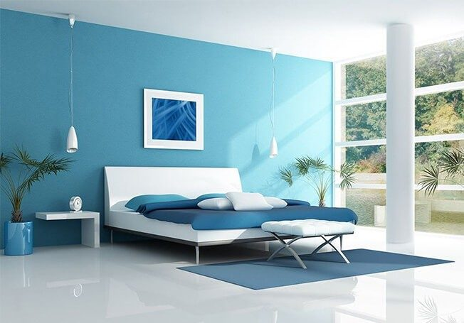

The company has come a long way since its small beginnings in 1942. It was set up as a partnership firm by four friends who were willing to take on the world's biggest, most famous paint companies operating in India at that time. Over the course of 25 years, Asian Paints became a corporate force and India's leading paints company. Driven by its strong consumer-focus and innovative spirit, the company has been the market leader in paints since 1967. Today, it is double the size of any other paint company in India. Asian Paints manufactures a wide range of paints for decorative and industrial use and also offers Wall Coverings, adhesives and services under its portfolio. The company is also present in the Home Improvement and Decor segment and offers bath and kitchen products. The company also introduced lightings, furnishings and furniture in its portfolio. In the Health and Hygiene segment, Asian Paints offers range of Sanitizers and Surface Disinfectants.